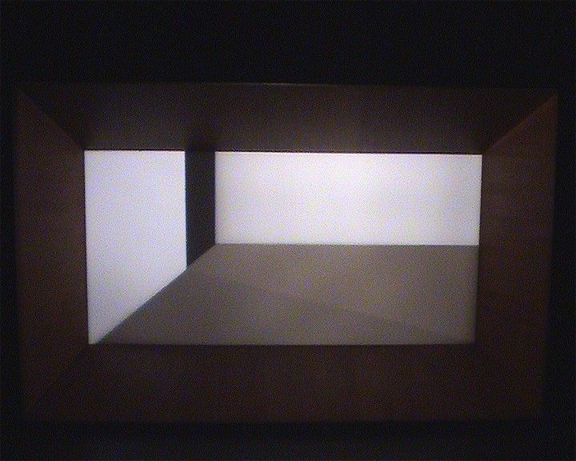
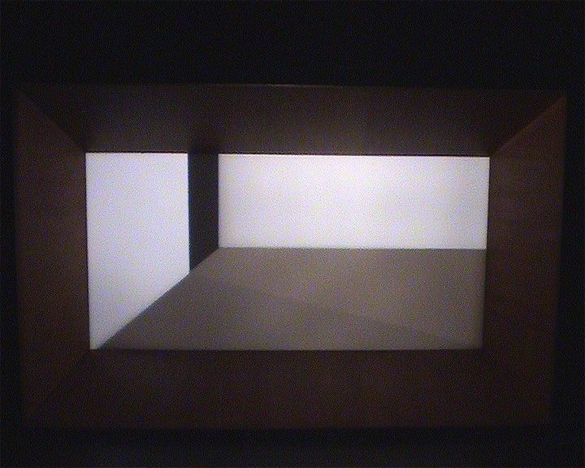

Opera’s shadows
2005

Autour de réflexions théoriques et d’expérimentations pratiques sur les perceptions sonores et visuelles du spectateur, le projet de Claudia Triozzi prend la forme d’un opéra aux lignes abstraites et de sons électroniques, chantés ou narrés. Ce dispositif radical est pour la chorégraphe une nouvelle occasion d’explorer les extensions possibles d’une pratique corporelle (ici à travers la voix) vers les champs de la création picturale, cinématographique, musicale et lyrique.
Conception, réalisation, scénographie Claudia Triozzi
Lumière Aurélien de Fursac et Claudia Triozzi
Musique Michel Guillet, électroniques – sampleurs / Haco, électroniques (sur une invitation de Claudia Triozzi, suite à sa résidence à la Villa Kujoyama, Japon, 2004) / Claudia Triozzi, objets sonorisés / Textes écrits, mis en mélodie et chantés par Claudia Triozzi
Concepteur sonore Yves Comeliau
Réalisation décor Alan Purenne et Thierry Richaud (Madame C.) Avec la participation de Julien Fanthou, ténor et Nicolas Rouault, baryton
Administration – contact Sophie Pulicani
Coproduction Festival Montpellier Danse 2005, Les Laboratoires d’Aubervilliers, Centre National de la Danse (compagnie en résidence). Avec le soutien de la Villa Kujoyama et de Anis Gras Le lieu de l’autre (Arcueil).
Accueil en résidence à l’Espace Pasolini, Valenciennes et accueil studio à la Ménagerie de Verre. L’association Cespi est soutenue par la Drac Ile De France, Ministère de la Culture et de la Communication
2002 Festival international de dança contemporânea (Dançasnacidade), Lisbonne
« Big Social Game »,Turin (19.4-19.5)
2001 Biennale de Lyon Connivence, Musée d’Art contemporain, Lyon
I ’ll never let you go – Choreography Visuals Thought Stockholm
2000 Centre Pompidou, Paris
Ménagerie de Verre, Paris
Espace Pasolini, Valenciennes
Festival Nouvelles Scènes, Dijon
Les Laboratoires d ’Aubervilliers
Centre Arteleku, San Sebastian
 
